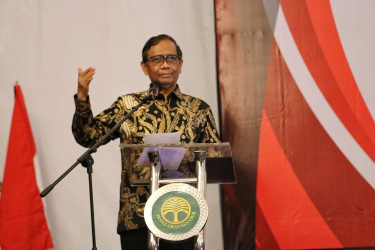

Yeb | 23.06.23
JAKARTA, KOMPAS.com - Menteri Koordinator Bidang Politik, Hukum, dan Keamanan (Menko Polhukam) Mahfud MD menyebutkan, pemerintah menyediakan dana riset untuk pelurusan sejarah tragedi 1965-1966. Hal itu diungkapkan Mahfud dalam konferensi pers terkait pelaksanaan kick off penyelesaian kasus pelanggaran HAM berat jalur non-yudisial di Kantor Kemenko Polhukam, Jakarta, Jumat (23/6/2023). Mahfud mengatakan bahwa dana riset itu akan disediakan oleh Kementerian Pendidikan, Kebudayaan, Riset, dan Teknologi. “Soal kebenaran sejarahnya itu ilmu, Kemndikbudristek akan memberikan dan menyediakan biaya penelitian bagi siapa saja yang menulis sejarah,” kata Mahfud.
Namun, kata Mahfud, hasil riset itu tidak mungkin menjadi satu-satunya kebenaran. Sebab, kata dia, setiap penulis sejarah memiliki orientasinya sendiri. “Jadi kita menyediakan dana untuk siapa yang mau menulis sejarah, silakan. Tapi jadi (naskah) akademik, bukan hasilnya itu lalu jadi dasar kebijakan, tak akan pernah ketemu, sejarah itu akan beda-beda,” tutur Mahfud. Data terbaru, terdapat 134 eksil dari korban peristiwa 1965-1966. Dua di antaranya akan ikut dalam kick off penyelesaian kasus pelanggaran HAM berat jalur non-yudisial di Rumah Geudong, Aceh, pada Selasa (27/6/2023). “Dua, dari Rusia dan Ceko akan ikut datang ke Aceh,” kata Mahfud. Penyelesaian atau penanganan pelanggaran HAM berat masa lalu jalur non-yudisial itu berupa pemulihan hak-hak korban, seperti pemberian beasiswa, jaminan kesehatan, rehabilitasi rumah, pelatihan-pelatihan keterampilan dan sebagainya.
Adapun eksil merupakan korban peristiwa 1965-1966 yang terpaksa berada di luar negeri dan tidak bisa pulang ke Tanah Air. Dalam kasus 1965-1966, setelah berhasil merebut kekuasaan dari Presiden Soekarno, Soeharto melakukan pembersihan besar-besaran, termasuk bagi orang Indonesia di luar negeri yang dilakukan skrining. Para WNI di luar negeri diuji loyalitasnya kepada rezim Orde Baru. Mereka yang tidak mau mengakui Soeharto sebagai pemimpin negara yang sah, dituduh sebagai kader Partai Komunis Indonesia (PKI) atau simpatisan komunis, dan dicabut kewarganegaraanya.
Banyak dari mereka yang sebelumnya merupakan mahasiswa maupun diplomat di luar negeri dicabut paspornya oleh Kedutaan Besar Republik Indonesia (KBRI) karena tidak mau tunduk pada Soeharto. Mereka pun lantas menjadi eksil yang terkatung-katung di negeri orang tanpa memiliki kewarnegaraan dan harus berpisah dengan sanak saudara di Indonesia.